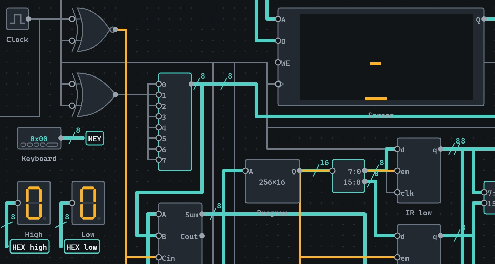

Build computers from their very first pulse.
Clockyard is a digital logic sandbox that runs in your browser. Wire switches into gates, gates into adders and registers, and add a clock and memory. Then open the 8-bit CPU that comes with it: built from the same parts, running the game below, and yours to reprogram.
Free and open source, with no install and no account. Pre-alpha, and made for a desktop browser.

Try it here
A half adder: an XOR gate for the sum, an AND gate for the carry. Click switch A or B and every wire and LED follows.

What you build
Gates first, then time and memory, then a working computer, and nine challenges that climb the same way. The circuits in Figs. 2 to 5 are under Examples in the editor, with notes on what to try.
Gates and wires
Place switches, gates and LEDs, drag wires between their ports, and the circuit updates as you build it. Then fold what you built into a part of its own.
- Parts
- Switches, LEDs, NOT, AND, NAND, OR, NOR, XOR and XNOR, splitters, mergers and net labels.
- Components
- Select a group of parts and make it a component with its own sheet. Fig. 3 is one full adder, placed four times. Add components, under Chips, copies components in from another file, an example or your library.
- Buses
- A wire can carry up to 32 bits. It is drawn thick, with a slash for its width; hover it to read its value in hex.
- Editing
- Undo and redo, single-key shortcuts for the common parts, rotation, box select, automatic routing.
-
1High: lit, and slightly thicker. -
0Low: grey and thin. -
/8A bus: one colour whatever it carries.

Time


Add a clock and the circuit starts to remember. A flip-flop or register changes only on a rising edge, the instant the clock goes from 0 to 1, so you can step a design one cycle at a time and see exactly what each edge did.
Run, pause, step or reset from the toolbar. Seven speeds go from 1 Hz, slow enough to follow by eye, to 10,000 Hz, fast enough for a game. Run until stops the clock the moment an LED you choose lights: a breakpoint you wire yourself.
Watch up to 16 wires from the inspector. The engine keeps their last 2,048 clock cycles and the waveform panel draws them; click to put a cursor anywhere and read what each wire held. The parts panel has the rest of a machine: D flip-flops, registers, ROM and RAM up to 32 bits wide, a keyboard, seven-segment digits and a pixel screen.
A computer
Clockyard ships an 8-bit reference CPU, built from the same parts you have. Its main blocks share one sheet, and its multiplexers, registers and adder are components you can open. Select any part to read what it holds, and change it as you would your own circuit.
Clockyard's own tests run the CPU circuit beside a model of its specification and compare the two after every clock cycle.
- Data
- 8 bits. Accumulator
A, output registerOUT, flagsZandC. - Program
- A ROM of 256 words × 16 bits, addressed by
PC. - Memory
- 256 bytes of RAM;
0xF0–0xFFreach the devices instead. - Devices
- A keyboard, a 64 × 32 pixel screen and two hex digits.
- Timing
- Two clock cycles per instruction: fetch, then execute.
- Instructions
NOPLDILDASTAADDSUBADISBIJMPJZJCOUTHLT

- Screen
- Keyboard and hex digits
- Program ROM
- Program counter
- Control ROM and decoding
- Data RAM
- ALU
- Accumulator
- Zero and carry flags
- I/O read bus
- Output register
- Fetch and halt state
- I/O address decoder
Programs
Select the program ROM and write assembly in its inspector. Assemble fills the ROM and resets the circuit; a mistake is listed by its line and changes nothing.
To play Catch: open the CPU with Catch, set the speed to 10,000 Hz, press Run, click the keyboard part, then hold Left or Right. Blocks fall in eight lanes, each catch makes the next fall faster, and a miss ends the game; Reset starts a new one. The whole game is 89 instructions.

Challenges
Nine challenges climb from an inverter to the ALU the CPU needs. Each asks for a component with named pins, and Check runs it on a test bench inside the engine.
The bench sets your inputs and reads your outputs step by step, so any circuit built from the allowed parts that behaves correctly passes. When one fails, you are told which step failed, the inputs it set, and which outputs were wrong. Find them under Challenges in the editor's parts panel.


- InverterParts: NAND only
- XORParts: NAND only
- Half adderParts: gates
- Full adderParts: gates
- 8-bit adderParts: gates, splitters, mergers; a full adder provided
- One-bit registerParts: gates, D flip-flops
- 8-bit registerParts: gates, D flip-flops, splitters, mergers
- 8-bit counterParts: gates, D flip-flops, splitters, mergers
- ALUParts: gates, splitters, mergers; an 8-bit adder provided
How it works
One engine, written in Rust, decides what every wire carries. The editor only draws what it reports, and a CPU you build runs through the parts and wires you placed. There is no hidden software emulator underneath.
- the circuit without positions, your commands
- values, diagnostics
- Connectivity
- Wires name the ports they join; nothing is inferred from where things sit. Two wires that cross are not connected unless they meet at a junction.
- Settling
- After any change the engine updates the wires until nothing moves, within a fixed number of steps. A loop that never settles is reported as unstable and the run pauses, instead of hanging the page.
- Determinism
- The same circuit and the same inputs, at the same cycles, give the same result at any speed or frame rate.
Where your circuits live
Clockyard is a static site. There is no account and no backend, and nothing you build is uploaded. It is open source under MIT or Apache-2.0, at your option.
Your circuits are kept in this browser as projects and saved as you work. Export one as a JSON file to take it elsewhere; older file versions still open.
The Copy link button puts the whole circuit after the # in the address. Browsers do not
send that part to any server, so whoever opens the link gets the circuit straight from it.
Where it stands
- Phase 0The Rust engine in the browser through WebAssemblyDone
- Phase 1First circuit editor: gates, wires, export and importDone
- Phase 2Components, junctions, routing, buses, net labelsDone
- Phase 3Clocks, flip-flops, run and stepDone
- Phase 4A programmable 8-bit computer and its assemblerDone
- Phase 5The sandbox: devices, a game, links, challenges, waveforms, examples, components from other filesDone
- Phase 6Persistence, scale and depth: projects, autosave, a component library and challenge progress are inIn progress
As of November 2026. Next in Phase 6: benchmarks with large circuits, editing a running circuit, challenges for the CPU itself, four-state signals and a second CPU. Each phase ends with a demo that works in the browser and is checked by tests; the roadmap has the details.
Start with one gate.
On your first visit the editor opens on an empty sheet. Press S for a switch, A for an AND gate and L for an LED, click to place each, then drag between their ports.
Then try the challenges, and open the CPU from Examples when you want to see where they lead.
Or run it from source
git clone https://github.com/josep-audenis/clockyard
cd clockyard
pnpm install
pnpm devThen open http://localhost:5173. It needs Node.js 22.13 or later, pnpm 10, a Rust toolchain with the wasm32-unknown-unknown target, and wasm-bindgen-cli 0.2.130; the README has the details.